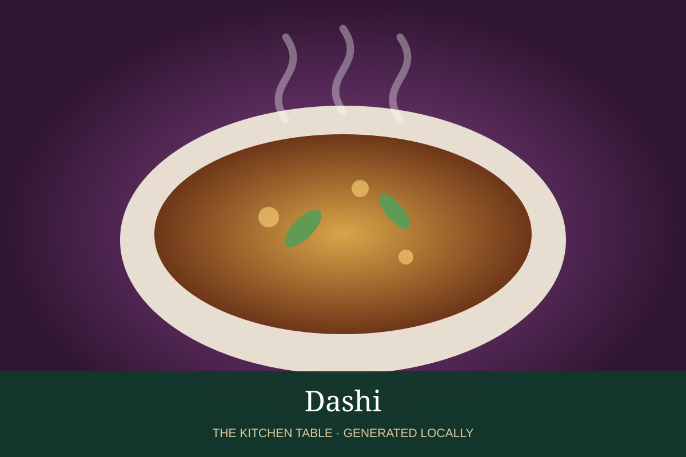

← Back to all recipes
BROTH & STOCK · JAPANESE
Dashi
Classic Japanese kombu-and-katsuobushi dashi: light, smoky, and deeply savory.
Broth & StockJapanese

Ingredients
- 4 cups water
- 1 piece kombu, about 4 inches
- 1 cup loosely packed katsuobushi
Preparation
- Soak kombu in water 30 minutes.
- Heat slowly and remove kombu just before simmering.
- Bring liquid briefly to a boil, turn off heat, and add katsuobushi.
- Steep 5 minutes and strain without pressing.